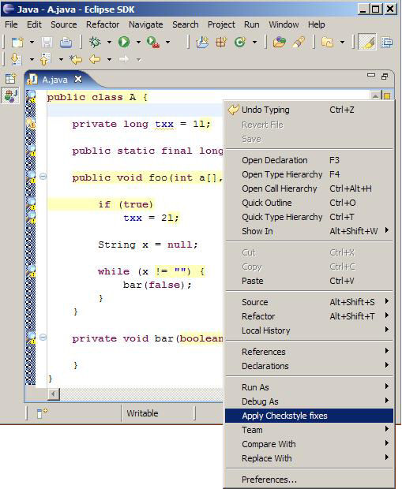
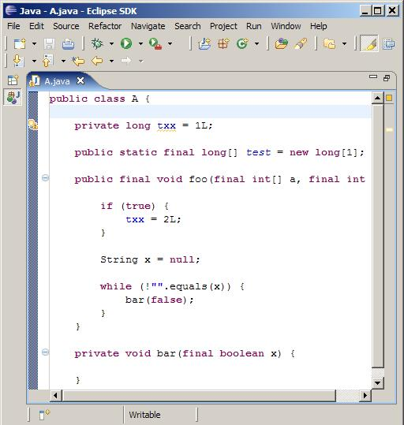
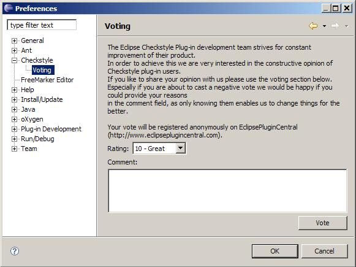

|
|
-- New and Noteworthy (4.2.0) --
-
Tested as working with the lastest Eclipse 3.3 Milestone (M4)
-
More on Quickfixes
A new context menu action ('Apply Checkstyle fixes') was added to the Java editor
and other views (e.g. Package Explorer) which - when invoked - tries to apply
all existing quickfixes to the Checkstyle violations in the selected file.


Additionaly new quickfixes were implemented for the following Checkstyle checks:
- FinalLocalVariable
- StringLiteralEquality
- FinalClass
- ArrayTypeStyle
- UncommentedMain
- UpperEll
- ModifierOrder
-
Copying a Check Configuration allows now to create External and Project Relative
Configurations
-
When creating a External or Project Relative Configuration it is now possible to
input the path to a (not yet) existing file. THe plugin then asks if the file
should be created.
-
EclipsePluginCentral voting client
Tell us and other users what you like or like not about the Eclipse Checkstyle
Plugin by voting on EclipsePluginCentral. To ease this up the plugin now
contains a voting client, which sends the votes to EclipsePluginCentral.

-- Fixed Bugs --
-- Resolved Feature Requests --
|
|